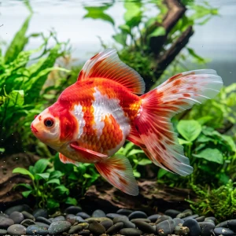

Nome popular principal
Kinguio
Kinguio, Peixe-Dourado, Goldfish
Ficha de peixe
Peixes de Água Fria
Um peixe dócil e emblemático que exige aquários espaçosos e filtragem eficiente para viver com saúde por muitos anos.

Nome popular principal
Kinguio, Peixe-Dourado, Goldfish
Nome científico
Nome técnico essencial para taxonomia, cruzamento de manejo e referência editorial consistente.
Dificuldade de manejo
Use este nível como referência inicial, sempre considerando volume, estabilidade e compatibilidade do aquário.
Seção 1
Seção 2
Seções 4 a 6
Kinguio tem hábito alimentar onívoro. Excelente. 2 a 3 vezes ao dia. Aceita facilmente rações específicas para peixes dourados, além de vegetais branqueados como ervilha e abobrinha para evitar problemas na bexiga natatória.
Machos desenvolvem pequenos pontos brancos (tubérculos nupciais) nas opérculas e nadadeiras peitorais no período reprodutivo. Tipo de reprodução: Ovíparo. Dificuldade de reprodução: Intermediário. A desova ocorre após mudanças sazonais de temperatura, sendo necessária a remoção dos ovos para evitar que os pais os comam.
Baixa. Substrato recomendado: Areia fina de rio ou sem substrato, para evitar acumulo de matéria orgânica. Necessidade de esconderijos: Baixa. Costuma arrancar e consumir plantas tenras; prefira espécies de folhas duras fixadas em rochas, como Anubias e Java Fern.
Seção 7
Possui elevado potencial de crescimento e grande expectativa de vida, necessitando de ao menos 40 a 50 litros adicionais por indivíduo extra.
Seção 8
Não. Globos de vidro não oferecem o volume de água, oxigenação e filtragem necessários para a sobrevivência do peixe a longo prazo.
Sendo um peixe de água fria e temperada, a faixa ideal fica entre 18°C e 24°C, devendo-se evitar picos permanentes acima de 26°C.
É um hábito natural de busca por alimento. Por isso, recomenda-se areia fina ou pedras grandes demais para que possam ser engolidas.